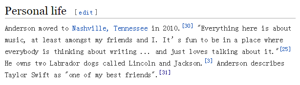
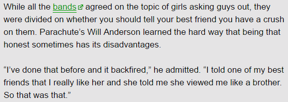
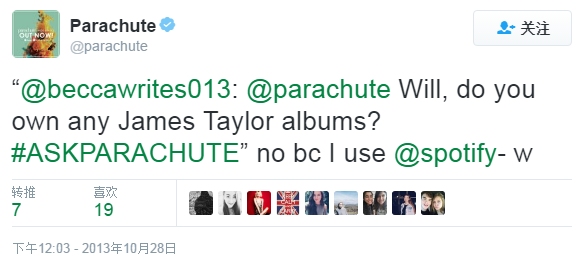
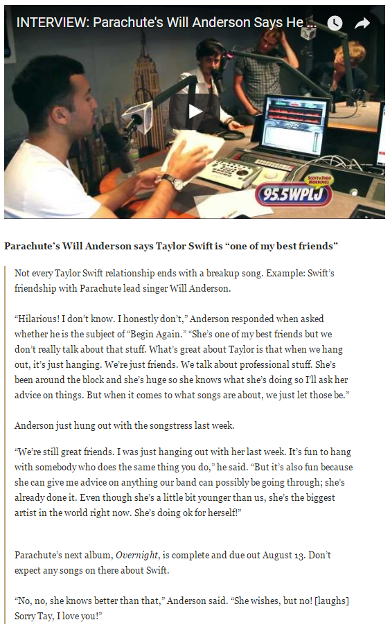
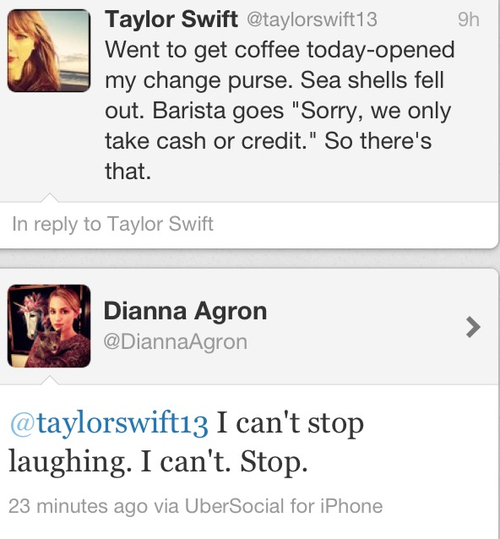

3. < Begin Again >
Begin Again的隐藏信息：I WEAR HEELS NOW
Begin Again is a song that I wrote about, getting through a breakup and, really being so kind of sad about it. And feeling a little insecure about all the things that relationship made you feel were wrong with yourself. And, after months and months and months, having the courage to stand back-up and dust yourself off. And go on that first date. And it's about kind of, the vulnerability involved with that, and the idea of that, you relies that, "Wow, this could be, this could be great. And maybe I don't have to be hurt anymore."
简而言之，Begin Again讲的是TS经历了上一段分手，变得沮丧，没有安全感，好几个月之后，终于鼓起勇气，放下过去，重新开始。
在Begin Again中有三个角色
一个是"I"，TS自己
一个是"He"，TS的前任
一个是"You"，让TS重新开始的人
RED发行后，在国内外粉丝的分析中，Begin Again中的He和You分别是谁，有两个不同版本的猜测：
版本一：He是Jake Gyllenhaal，You是Will Anderson；
版本二：He是Will Anderson，You是Conor Kennedy；
判断的依据来源于Begin Again的单封以及以下歌词
I've been spending the last eight months
Thinking all love ever does is break and burn and end
But on a Wednesday in a cafe I watched it begin again
You said you never met one girl who had as many James Taylor records as you, but I do
you throw your head back laughing like a little kid
版本一的论据是：
1. 11年11月底TS和Will Anderson传出绯闻，恰逢TS和Jake分手8个月后；
2. Will Anderson在推特上推荐过一首James Taylor的歌；
3.TS参加Will Anderson生日party那天穿的裙子和Begin Again单封上的裙子一模一样；
版本二的论据是：
1. TS在11年11月和Will Anderson短暂的在一起，然后分手了，8个月后是12年7月，那时候TS和Conor Kennedy在一起了；
2. Conor当时只有18岁，所以laughing like a little kid；
3. Begin Again隐藏信息是I WEAR HEELS NOW，Conor个子很高可以让TS穿高跟鞋；
4. Conor是TS继Jake之后第一个正式男友，所以Begin Again是写他的；
无论哪个版本，都少不了关键人物Will Anderson。
那Will Anderson到底有没有和TS date过呢？
在Will Anderson的Wiki中写着
他是2010年搬到纳什维尔，那儿的一切都是关于音乐，每个人都在想着谈着音乐创作。Anderson称Taylor Swift为最好的朋友之一。
TS和Will Anderson（包括他所在的Parachute降落伞乐队的其他成员）是都住在Nashville的好朋友，TS去过Will家，Will也去过TS家。
{kind=link}
{kind=link}
2011年11月，他们一起出去玩被狗仔拍到，媒体开始传他们在dating，几天后Gossip Cop辟谣，评分为2而不是0，也许并不完全是没有感情。
{kind=link}
Will Anderson在一次采访中被问及"你是否会告诉最好的朋友你喜欢她"，他说他已经从中学到教训了，坦白有时更坏事。
"I've done that before and it backfired", he admitted. "I told one of my best friends that I really like her and she told me she viewed me like a brother. So that was that."
"我曾这么干过却事与愿违"，他承认道，"我告诉最好的朋友我真的喜欢她，但她却跟我讲她只把我当兄弟。所以就这样了。"
所以这是一个落花有意流水无情的悲剧……
至于Begin Again中提到的"You said you never met one girl who had as many James Taylor records as you"，Will Anderson也给出了回答
当有人在推特上问他是否有James Taylor records时，他回答：没有，因为我用Spotify。
在有次采访中，Will Anderson还被问到Begin Again是否是写他的
降落伞乐队的Will Anderson说Taylor Swift是"one of my best friends"
不是Taylor Swift的每段关系都会以一首分手歌结束，例如TS和降落伞乐队主唱Will Anderson的友情就不是。
"太搞笑了，我不知道，我真不知道"，当被问到Begin Again是不是写他时他这么回答，"她是我最好的朋友但我们从未谈过。关于Taylor最妙的是，我们出去玩，就只是出去玩，我们只是朋友。我们会讨论专业的话题，她住得近又是大明星，她知道很多所以我会去向她咨询意见。至于一些歌是写谁的，就随它们去吧。"
至于为什么TS在12年5月参加Will生日party时穿的裙子和Begin Again单封上的裙子一模一样，在Chapter1.2.2 Everyone Was Watching中有讲到，TS在那天下午先拍了一组为新专准备的照片，没有换衣服继续参加晚上的生日party，而那组照片中有2张后来成为RED的单封，一个是Begin Again，一个是Everything Has Changed。EHC单封的裙子也和参加Will生日party的裙子一样，但EHC明显不是写Will的。
综上所述，Taylor Swift和Will Anderson只是朋友，即使Will曾对Taylor有过Crush，也许还写过歌（据传White Dress是写TS），最终他们也没有在一起，因为Taylor只把他当朋友当兄弟。
那么前面提到的
猜测一：TS和Jake分手8个月后和Will在一起，Begin Again是写Will的
猜测二：TS和Will分手8个月后和Conor在一起，Begin Again是写Conor的
全都不成立
Conor Kennedy是在12年7月出现，8个月前是11年11月，在那个时间点上TS并没有什么"break and burn and end"的恋情
所以我的个人观点是
Begin Again中的ex —— "He"，是Jake Gyllenhaal
让TS重新开始的"You"，是11年1月与Jake分手过了8个月 —— 11年9月遇到的人。
在整首歌中，TS一直拿"He"和"I"，"He"和"You"作对比
He didn't like it when I wore high heels, but I do
他不喜欢我穿高跟鞋，但是我喜欢
He always said he didn't get this song, but I do
他说他搞不懂这首歌在唱些什么，但是我懂
I think it's strange that you think I'm funny cause he never did
我觉得不可思议，你认为我很有趣，可他从不这么认为
写Jake的WANEGBT中有一句
you would hide away and find your peace of mind with some indie record that's much cooler than mine
你会躲得远远的，听着那些比我的歌酷多了的独立音乐来寻求心灵平静
TS描绘出的He，是一个与TS完全不契合的前男友，不喜欢她的穿着，完全不同的音乐品味，无法领会她的泰式幽默。
但是You和He不一样。
歌词中
You said you never met one girl who had as many James Taylor records as you, but I do
这句与其说是特指两人都有很多James Taylor的唱片，不如说是与第一段中He always said he didn't get this song作对比，You和He是不同的，You和TS有同样的音乐品味。
隐藏信息中写的：I WEAR HEELS NOW
也是与第一段中He didn't like it when I wore high heels对应，You不会像He一样对TS的穿着指手画脚，TS可以穿自己想穿的衣服想穿的鞋，也许You还和TS有一样的穿衣品味。这里同样没必要特指成TS终于可以穿高跟鞋了因为她找了高个子的新男友。
you don't know how nice that is, but I do
你没意识到你的举动有多nice，可我知道
you think I'm funny
你觉得我很有趣
You和He完全不同，You很nice，You觉得TS funny，You和TS喜欢同样的音乐，You不会对TS的穿着指手画脚，最后TS在这个人身上感受到what past is past过去的都过去了，她又可以重新开始。
歌词中还有一段的细节值得注意
Walked in expecting you'd be late
but you got here early and you stand and wave, I walk to you
You pull my chair out and help me in
and you don't know how nice that is, but I do
推开（咖啡馆的）门时还预想你会迟到
没想到你竟早到了，你起身向我招手，我走向你
你帮我拉开椅子让我坐下
你没意识到这个举动有多nice，但我知道
如果TS和一位男士约在咖啡馆见面
对一个西方绅士，或者略有修养的男士来说，约会提前到场、帮女士拉开椅子是日常礼仪吧，应该是非常习以为常的事了。
为什么TS会预想对方可能要迟到？
为什么对方帮她拉开椅子的举动让TS表现得就像以前从来没有男士帮她拉开过椅子一样的意外？
如果和TS约在咖啡馆见面的，也是一位女士呢
TS会预想对方可能要迟到
TS会因为对方帮她拉开椅子感到意外和nice
就一点都不奇怪了
从时间上看
I've been spending the last eight months
Thinking all love ever does is break and burn and end
But on a Wednesday in a cafe I watched it begin again
TS和前男友Jake 在2010年12月分手，11年1月被传短暂复合又分手。
2011年9月4号，TS和DA在逛同一个市场时偶遇，之后悄无声息没有任何公开记录的成为了BFF。
11年9月正好是eight months。
He always said he didn't get this song
You said you never met one girl who had as many James Taylor records as you, but I do
她们有同样的音乐品味的例子请看Chapter 1.3.1 – in Wonderland
He didn't like it when I wore high heels
I WEAR HEELS NOW
她们有同样的穿衣品味的例子，可以看12年初她们最开始那几次dress-up party，以及后来几次的情侣装和互换衣服，图1、图2、图3、图4，新闻报道，图5、图6，媒体人对她们有同样穿衣品味的评论。
{kind=link}
{kind=link}
{kind=link}
{kind=link}
{kind=link}
{kind=link}
{kind=link}
I think it's strange that you think I'm funny cause he never did
